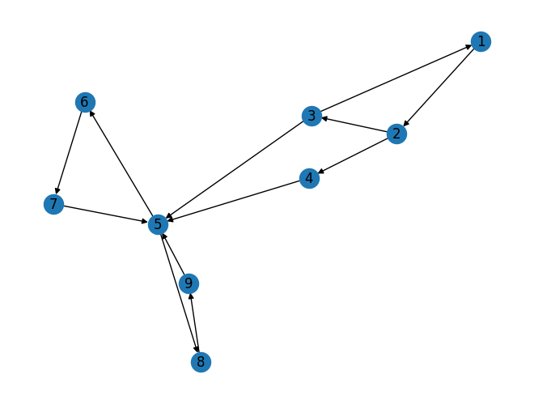

TUGAS PAGERANK#
Tugas :
Buat graph berarah dengan networkx (minimal 9 node )
Hitung manual pagerank dari graph yang anda buat
Hitung menggunakan pagerank menggunakan networkx
Implementasikan ulang Shakunni/Extractive-Text-Summarization
Upload di github repository webstatis masing masing
Beri penjelasan terkait dengan proses
import pandas as pd
import networkx as nx
import matplotlib.pyplot as plt
1. Buat graph berarah dengan networkx (minimal 9 node )#
# membuat objek grafik kosong
G = nx.DiGraph()
# menambahkan node
G.add_node(1)
G.add_node(2)
G.add_node(3)
G.add_node(4)
G.add_node(5)
G.add_node(6)
G.add_node(7)
G.add_node(8)
G.add_node(9)
# menambahkan edge
G.add_edge(1, 2)
G.add_edge(2, 3)
G.add_edge(2, 4)
G.add_edge(3, 1)
G.add_edge(3, 5)
G.add_edge(4, 5)
G.add_edge(5, 6)
G.add_edge(5, 8)
G.add_edge(6, 7)
G.add_edge(7, 5)
G.add_edge(8, 9)
G.add_edge(9, 5)
nx.draw(G, with_labels=True)

Perhitungan manual pagerank#
# menghitung PageRank secara manual
d = 0.85 # faktor dampak
N = len(G.nodes()) # jumlah node
pr = {node: 1/N for node in G.nodes()} # nilai awal PageRank
for i in range(100): # melakukan iterasi hingga konvergen
new_pr = {}
for node in G.nodes():
in_nodes = [n for n in G.predecessors(node)] # node yang mengarah ke node ini
in_pr = sum([pr[n]/len(list(G.successors(n))) for n in in_nodes]) if in_nodes else 0 # PageRank dari node yang mengarah ke node ini
new_pr[node] = (1-d)/N + d*in_pr # menghitung nilai PageRank baru untuk node ini
pr = new_pr.copy()
print("Hitung Manual", pr)
Hitung Manual {1: 0.03161418146466325, 2: 0.04353872091163043, 3: 0.035170623054109604, 4: 0.035170623054109604, 5: 0.29524037855084734, 6: 0.142143819289085, 7: 0.1374889171932348, 8: 0.142143819289085, 9: 0.1374889171932348}
Pagerank menggunakan networkx#
pr = nx.pagerank(G, alpha=0.85)
print("Hitung Networkx Pagerank", pr)
Hitung Networkx Pagerank {1: 0.03161418146466325, 2: 0.04353872091163043, 3: 0.035170623054109604, 4: 0.035170623054109604, 5: 0.2952422202251482, 6: 0.14214284729431512, 7: 0.13748896835085428, 8: 0.14214284729431512, 9: 0.13748896835085428}
2. Implementasiikan ulang#
Shakunni/Extractive-Text-Summarization
!pip install PyPDF2
Looking in indexes: https://pypi.org/simple, https://us-python.pkg.dev/colab-wheels/public/simple/
Collecting PyPDF2
Downloading pypdf2-3.0.1-py3-none-any.whl (232 kB)
?25l ━━━━━━━━━━━━━━━━━━━━━━━━━━━━━━━━━━━━━━━━ 0.0/232.6 kB ? eta -:--:--
━━━━━━━━━━━━━━━━━━━━━━━━━━━━━━━━━━━━━━━ 232.6/232.6 kB 7.7 MB/s eta 0:00:00
?25h
Installing collected packages: PyPDF2
Successfully installed PyPDF2-3.0.1
!pip install docx2txt
Looking in indexes: https://pypi.org/simple, https://us-python.pkg.dev/colab-wheels/public/simple/
Collecting docx2txt
Downloading docx2txt-0.8.tar.gz (2.8 kB)
Preparing metadata (setup.py) ... ?25l?25hdone
Building wheels for collected packages: docx2txt
Building wheel for docx2txt (setup.py) ... ?25l?25hdone
Created wheel for docx2txt: filename=docx2txt-0.8-py3-none-any.whl size=3957 sha256=ba1d0c0a149260ca3617b06e166d33516eae8609824b97ab17e84e1c0a4c8daa
Stored in directory: /root/.cache/pip/wheels/22/58/cf/093d0a6c3ecfdfc5f6ddd5524043b88e59a9a199cb02352966
Successfully built docx2txt
Installing collected packages: docx2txt
Successfully installed docx2txt-0.8
import numpy as np
import PyPDF2
import docx2txt
import sys
import matplotlib.pyplot as plt
%matplotlib inline
import networkx as nx
from nltk.tokenize.punkt import PunktSentenceTokenizer
from sklearn.feature_extraction.text import TfidfTransformer, CountVectorizer
Fungsi membaca dokumen#
def readDoc():
name = input('Please input a file name: ')
print('You have asked for the document {}'.format(name))
# now read the type of document
if name.lower().endswith('.txt'):
choice = 1
elif name.lower().endswith('.pdf'):
choice = 2
else:
choice = 3
# print(name)
print(choice)
# Case 1: if it is a .txt file
if choice == 1:
f = open(name, 'r')
document = f.read()
f.close()
# Case 2: if it is a .pdf file
elif choice == 2:
pdfFileObj = open(name, 'rb')
pdfReader = PyPDF2.PdfFileReader(pdfFileObj)
pageObj = pdfReader.getPage(0)
document = pageObj.extractText()
pdfFileObj.close()
# Case 3: none of the format
else:
print('Failed to load a valid file')
print('Returning an empty string')
document = ''
print(type(document))
return document
Fungsi melakukan tokenisasi pada dokumen#
def tokenize(document):
# We are tokenizing using the PunktSentenceTokenizer
# we call an instance of this class as sentence_tokenizer
doc_tokenizer = PunktSentenceTokenizer()
# tokenize() method: takes our document as input and returns a list of all the sentences in the document
# sentences is a list containing each sentence of the document as an element
sentences_list = doc_tokenizer.tokenize(document)
return sentences_list
Membaca dokumen#
def readDoc(story):
with open(story, 'r') as file:
document = file.read()
return document
document = readDoc('/content/drive/MyDrive/prosaindata/tugas/story.txt')
print('The length of the file is:', end=' ')
print(len(document))
The length of the file is: 699
Generate list pada setiap kata
sentences_list = tokenize(document)
# let us print the size of memory used by the list sentences
print('The size of the list in Bytes is: {}'.format(sys.getsizeof(sentences_list)))
# the size of one of the element of the list
print('The size of the item 0 in Bytes is: {}'.format(sys.getsizeof(sentences_list[0])))
The size of the list in Bytes is: 120
The size of the item 0 in Bytes is: 151
Print elemen dalam list#
for i in sentences_list:
print(i)
Pagi ini, saya bangun lebih awal dari biasanya dan memutuskan untuk menghabiskan waktu di tengah alam.
Saya pergi ke sebuah taman yang terletak di pinggiran kota, yang memiliki pemandangan indah dan suasana yang tenang.
Ketika saya tiba di taman, matahari baru saja mulai muncul dari balik gunung dan sinarnya menyebar di sekitar taman.
Saya melihat rumput hijau yang subur dan bunga-bunga yang bermekaran di sekitar saya.
Udara segar dan bersih membuat saya merasa segar dan berenergi.
Saya berjalan-jalan di sekitar taman dan menikmati keindahan pemandangan yang dikelilingi oleh pepohonan hijau.
Saya mendengarkan suara burung bernyanyi dan merasakan angin yang lembut berhembus di wajah saya.
Generate term-document matrix#
cv = CountVectorizer()
cv_matrix = cv.fit_transform(sentences_list)
cv_demo = CountVectorizer()
text_demo = ["Ashish is good, you are bad", "I am not bad"]
res_demo = cv_demo.fit_transform(text_demo)
print('Result demo array is {}'.format(res_demo.toarray()))
# Result is 2-d matrix containing document text matrix
# Notice that in the second row, there is 2.
# also, bad is repeated twice in that sentence.
# so we can infer that 2 is corresponding to the word 'bad'
print('Feature list: {}'.format(cv_demo.get_feature_names_out()))
Result demo array is [[0 1 1 1 1 1 0 1]
[1 0 0 1 0 0 1 0]]
Feature list: ['am' 'are' 'ashish' 'bad' 'good' 'is' 'not' 'you']
print('The data type of bow matrix {}'.format(type(cv_matrix)))
print('Shape of the matrix {}'.format(cv_matrix.get_shape))
print('Size of the matrix is: {}'.format(sys.getsizeof(cv_matrix)))
print(cv.get_feature_names_out())
print(cv_matrix.toarray())
The data type of bow matrix <class 'scipy.sparse._csr.csr_matrix'>
Shape of the matrix <bound method spmatrix.get_shape of <7x69 sparse matrix of type '<class 'numpy.int64'>'
with 96 stored elements in Compressed Sparse Row format>>
Size of the matrix is: 48
['alam' 'angin' 'awal' 'balik' 'bangun' 'baru' 'berenergi' 'berhembus'
'berjalan' 'bermekaran' 'bernyanyi' 'bersih' 'biasanya' 'bunga' 'burung'
'dan' 'dari' 'di' 'dikelilingi' 'gunung' 'hijau' 'indah' 'ini' 'jalan'
'ke' 'keindahan' 'ketika' 'kota' 'lebih' 'lembut' 'matahari' 'melihat'
'membuat' 'memiliki' 'memutuskan' 'mendengarkan' 'menghabiskan'
'menikmati' 'menyebar' 'merasa' 'merasakan' 'mulai' 'muncul' 'oleh'
'pagi' 'pemandangan' 'pepohonan' 'pergi' 'pinggiran' 'rumput' 'saja'
'saya' 'sebuah' 'segar' 'sekitar' 'sinarnya' 'suara' 'suasana' 'subur'
'taman' 'tenang' 'tengah' 'terletak' 'tiba' 'udara' 'untuk' 'wajah'
'waktu' 'yang']
[[1 0 1 0 1 0 0 0 0 0 0 0 1 0 0 1 1 1 0 0 0 0 1 0 0 0 0 0 1 0 0 0 0 0 1 0
1 0 0 0 0 0 0 0 1 0 0 0 0 0 0 1 0 0 0 0 0 0 0 0 0 1 0 0 0 1 0 1 0]
[0 0 0 0 0 0 0 0 0 0 0 0 0 0 0 1 0 1 0 0 0 1 0 0 1 0 0 1 0 0 0 0 0 1 0 0
0 0 0 0 0 0 0 0 0 1 0 1 1 0 0 1 1 0 0 0 0 1 0 1 1 0 1 0 0 0 0 0 3]
[0 0 0 1 0 1 0 0 0 0 0 0 0 0 0 1 1 2 0 1 0 0 0 0 0 0 1 0 0 0 1 0 0 0 0 0
0 0 1 0 0 1 1 0 0 0 0 0 0 0 1 1 0 0 1 1 0 0 0 2 0 0 0 1 0 0 0 0 0]
[0 0 0 0 0 0 0 0 0 1 0 0 0 2 0 1 0 1 0 0 1 0 0 0 0 0 0 0 0 0 0 1 0 0 0 0
0 0 0 0 0 0 0 0 0 0 0 0 0 1 0 2 0 0 1 0 0 0 1 0 0 0 0 0 0 0 0 0 2]
[0 0 0 0 0 0 1 0 0 0 0 1 0 0 0 2 0 0 0 0 0 0 0 0 0 0 0 0 0 0 0 0 1 0 0 0
0 0 0 1 0 0 0 0 0 0 0 0 0 0 0 1 0 2 0 0 0 0 0 0 0 0 0 0 1 0 0 0 0]
[0 0 0 0 0 0 0 0 1 0 0 0 0 0 0 1 0 1 1 0 1 0 0 1 0 1 0 0 0 0 0 0 0 0 0 0
0 1 0 0 0 0 0 1 0 1 1 0 0 0 0 1 0 0 1 0 0 0 0 1 0 0 0 0 0 0 0 0 1]
[0 1 0 0 0 0 0 1 0 0 1 0 0 0 1 1 0 1 0 0 0 0 0 0 0 0 0 0 0 1 0 0 0 0 0 1
0 0 0 0 1 0 0 0 0 0 0 0 0 0 0 2 0 0 0 0 1 0 0 0 0 0 0 0 0 0 1 0 1]]
normal_matrix = TfidfTransformer().fit_transform(cv_matrix)
print(normal_matrix.toarray())
[[0.27455638 0. 0.27455638 0. 0.27455638 0.
0. 0. 0. 0. 0. 0.
0.27455638 0. 0. 0.11505554 0.22790537 0.13041906
0. 0. 0. 0. 0.27455638 0.
0. 0. 0. 0. 0.27455638 0.
0. 0. 0. 0. 0.27455638 0.
0.27455638 0. 0. 0. 0. 0.
0. 0. 0.27455638 0. 0. 0.
0. 0. 0. 0.11505554 0. 0.
0. 0. 0. 0. 0. 0.
0. 0.27455638 0. 0. 0. 0.27455638
0. 0.27455638 0. ]
[0. 0. 0. 0. 0. 0.
0. 0. 0. 0. 0. 0.
0. 0. 0. 0.10754085 0. 0.12190093
0. 0. 0. 0.25662413 0. 0.
0.25662413 0. 0. 0.25662413 0. 0.
0. 0. 0. 0.25662413 0. 0.
0. 0. 0. 0. 0. 0.
0. 0. 0. 0.21302007 0. 0.25662413
0.25662413 0. 0. 0.10754085 0.25662413 0.
0. 0. 0. 0.25662413 0. 0.18208249
0.25662413 0. 0.25662413 0. 0. 0.
0. 0. 0.47425633]
[0. 0. 0. 0.25432868 0. 0.25432868
0. 0. 0. 0. 0. 0.
0. 0. 0. 0.10657892 0.21111464 0.24162111
0. 0.25432868 0. 0. 0. 0.
0. 0. 0.25432868 0. 0. 0.
0.25432868 0. 0. 0. 0. 0.
0. 0. 0.25432868 0. 0. 0.25432868
0.25432868 0. 0. 0. 0. 0.
0. 0. 0.25432868 0.10657892 0. 0.
0.1804538 0.25432868 0. 0. 0. 0.3609076
0. 0. 0. 0.25432868 0. 0.
0. 0. 0. ]
[0. 0. 0. 0. 0. 0.
0. 0. 0. 0.29093758 0. 0.
0. 0.58187517 0. 0.12192024 0. 0.13820042
0. 0. 0.24150318 0. 0. 0.
0. 0. 0. 0. 0. 0.
0. 0.29093758 0. 0. 0. 0.
0. 0. 0. 0. 0. 0.
0. 0. 0. 0. 0. 0.
0. 0.29093758 0. 0.24384048 0. 0.
0.20642891 0. 0. 0. 0.29093758 0.
0. 0. 0. 0. 0. 0.
0. 0. 0.35844639]
[0. 0. 0. 0. 0. 0.
0.31817369 0. 0. 0. 0. 0.31817369
0. 0. 0. 0.2666676 0. 0.
0. 0. 0. 0. 0. 0.
0. 0. 0. 0. 0. 0.
0. 0. 0.31817369 0. 0. 0.
0. 0. 0. 0.31817369 0. 0.
0. 0. 0. 0. 0. 0.
0. 0. 0. 0.1333338 0. 0.63634739
0. 0. 0. 0. 0. 0.
0. 0. 0. 0. 0.31817369 0.
0. 0. 0. ]
[0. 0. 0. 0. 0. 0.
0. 0. 0.31096575 0. 0. 0.
0. 0. 0. 0.13031324 0. 0.14771415
0.31096575 0. 0.25812828 0. 0. 0.31096575
0. 0.31096575 0. 0. 0. 0.
0. 0. 0. 0. 0. 0.
0. 0.31096575 0. 0. 0. 0.
0. 0.31096575 0. 0.25812828 0.31096575 0.
0. 0. 0. 0.13031324 0. 0.
0.22063949 0. 0. 0. 0. 0.22063949
0. 0. 0. 0. 0. 0.
0. 0. 0.19156093]
[0. 0.30885422 0. 0. 0. 0.
0. 0.30885422 0. 0. 0.30885422 0.
0. 0. 0.30885422 0.12942838 0. 0.14671114
0. 0. 0. 0. 0. 0.
0. 0. 0. 0. 0. 0.30885422
0. 0. 0. 0. 0. 0.30885422
0. 0. 0. 0. 0.30885422 0.
0. 0. 0. 0. 0. 0.
0. 0. 0. 0.25885677 0. 0.
0. 0. 0.30885422 0. 0. 0.
0. 0. 0. 0. 0. 0.
0.30885422 0. 0.19026019]]
print(normal_matrix.T.toarray)
res_graph = normal_matrix * normal_matrix.T
<bound method _cs_matrix.toarray of <69x7 sparse matrix of type '<class 'numpy.float64'>'
with 96 stored elements in Compressed Sparse Column format>>
nx_graph = nx.from_scipy_sparse_array(res_graph)
nx.draw_circular(nx_graph)
print('Number of edges {}'.format(nx_graph.number_of_edges()))
print('Number of vertices {}'.format(nx_graph.number_of_nodes()))
plt.show()
print('The memory used by the graph in Bytes is: {}'.format(sys.getsizeof(nx_graph)))
Number of edges 28
Number of vertices 7
The memory used by the graph in Bytes is: 48
Menentukan Rank untuk setiap kaliman Menggunakan textrank#
# ranks is a dictionary with key=node(sentences) and value=textrank (the rank of each of the sentences)
ranks = nx.pagerank(nx_graph)
# analyse the data type of ranks
print(type(ranks))
print('The size used by the dictionary in Bytes is: {}'.format(sys.getsizeof(ranks)))
# print the dictionary
for i in ranks:
print(i, ranks[i])
<class 'dict'>
The size used by the dictionary in Bytes is: 360
0 0.12781190210576654
1 0.15145422980093037
2 0.14158926079625825
3 0.1561341060242873
4 0.12582255178159504
5 0.15564948517543448
6 0.141538464315728
Menemukan kalimat penting dan menentukan kesimpulan#
# enumerate method: returns an enumerate object
# Use of list Comprehensions
# O/p: sentence_array is the sorted(descending order w.r.t. score value) 2-d array of ranks[sentence] and sentence
# For example, if there are two sentences: S1 (with a score of S1 = s1) and S2 with score s2, with s2>s1
# then sentence_array is [[s2, S2], [s1, S1]]
sentence_array = sorted(((ranks[i], s) for i, s in enumerate(sentences_list)), reverse=True)
sentence_array = np.asarray(sentence_array)
# as sentence_array is in descending order wrt score value
# fmax is the largest score value(the score of first element)
# fmin is the smallest score value(the score of last element)
rank_max = float(sentence_array[0][0])
rank_min = float(sentence_array[len(sentence_array) - 1][0])
# print the largest and smallest value of scores of the sentence
print(rank_max)
print(rank_min)
0.1561341060242873
0.12582255178159504
# Normalization of the scores
# so that it comes out in the range 0-1
# fmax becomes 1
# fmin becomes 0
# store the normalized values in the list temp_array
temp_array = []
# if all sentences have equal ranks, means they are all the same
# taking any sentence will give the summary, say the first sentence
flag = 0
if rank_max - rank_min == 0:
temp_array.append(0)
flag = 1
# If the sentence has different ranks
if flag != 1:
for i in range(0, len(sentence_array)):
temp_array.append((float(sentence_array[i][0]) - rank_min) / (rank_max - rank_min))
print(len(temp_array))
7
# Calculation of threshold:
# We take the mean value of normalized scores
# any sentence with the normalized score 0.2 more than the mean value is considered to be
threshold = (sum(temp_array) / len(temp_array)) + 0.2
# Separate out the sentences that satiasfy the criteria of having a score above the threshold
sentence_list = []
if len(temp_array) > 1:
for i in range(0, len(temp_array)):
if temp_array[i] > threshold:
sentence_list.append(sentence_array[i][1])
else:
sentence_list.append(sentence_array[0][1])
model = sentence_list
Menjadikan Kesimpulan ke dalam file baru#
# print(sentence_list)
summary = " ".join(str(x) for x in sentence_list)
print(summary)
# save the data in another file, names sum.txt
f = open('final3.txt', 'a+')
#print(type(f))
f.write('\n')
f.write(summary)
f.close
Saya melihat rumput hijau yang subur dan bunga-bunga yang bermekaran di sekitar saya. Saya berjalan-jalan di sekitar taman dan menikmati keindahan pemandangan yang dikelilingi oleh pepohonan hijau. Saya pergi ke sebuah taman yang terletak di pinggiran kota, yang memiliki pemandangan indah dan suasana yang tenang.
<function TextIOWrapper.close()>
for lines in sentence_list:
print(lines)
Saya melihat rumput hijau yang subur dan bunga-bunga yang bermekaran di sekitar saya.
Saya berjalan-jalan di sekitar taman dan menikmati keindahan pemandangan yang dikelilingi oleh pepohonan hijau.
Saya pergi ke sebuah taman yang terletak di pinggiran kota, yang memiliki pemandangan indah dan suasana yang tenang.